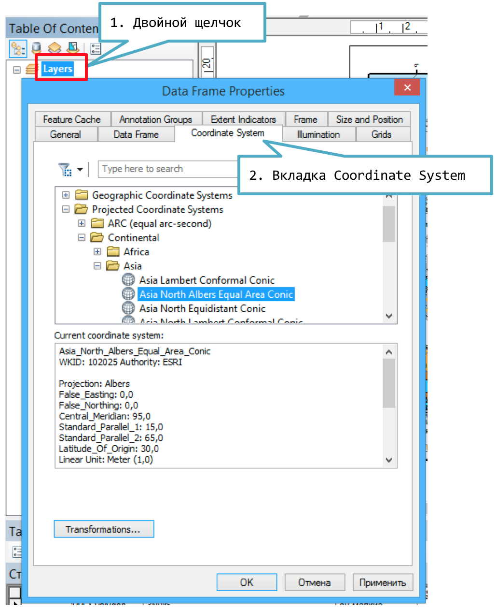

L Проекции и координатная сетка
L.1 Изменение проекции (системы координат карты)
Дважды щелкните на заголовке фрейма данных в таблице содержания (если вы его не переименовывали, то он называется Layers).
-
Перейдите на вкладку Coordinate System и выберите необходимую проекцию в списке:

Системы координат возможны двух типов:
Географические (Geographic) — координаты объектов хранятся в широтах и долготах, проекция не используются
Проецированные (Projected) — координаты объектов хранятся в метрических единицах, используются та или иная проекция.
L.2 Вставка координатной сетки
В контекстном меню фрейма карты выберите команду Properties
Перейдите на вкладку Grids и нажмите кнопку NewGrid…
Выберите нужный тип сетки и нажмите Далее:
Graticule (градусная)
Measured (прямоугольные координаты)
Reference (сетка-указательница)
-
Задайте шаг сетки и нажмите далее. В остальных диалоговых окнах вы можете оставить параметры по умолчанию и настроить их позже.

L.3 Отображение нулевых минут и секунд
Если шаг сетки кратен целым градусам, нет необходимости отображать нулевые минуты и секунды. Чтобы отключить их, выполните следующие действия:
На вкладке Grids в свойствах фрейма данных выделите нужную сетку и нажмите кнопку Properties
Перейдите на вкладку Labels и нажмите кнопку Additional Properties
Снимите флажки с опций Show Zero Minutes и Show Zero Seconds.
L.4 Шаг линий сетки
Откройте настройки координатной сетки, нажав кнопку Properties на вкладке Grids свойств фрейма данных, затем в появившемся диалоге на вкладке Intervals установите требуемое значение в разделе Interval:

L.5 Начало расстановки линий сетки
При создании сетки вы устанавливали шаг размещения линий. Однако каково начальное значение широты и долготы, от которого с заданным шагом будут размещаться линии сетки? Чтобы установить это значение явным образом, откройте настройки координатной сетки, нажав кнопку Properties на вкладке Grids свойств фрейма данных, затем в появившемся диалоге на вкладке Intervals установите требуемое значение в разделе Origin. В частности, если вы хотите чтобы линии широт отсчитывались от экватора, в поле Y Origin следует установить 0: